Trois scénarios pour produire des croissants de base, du pain pour sandwich et des buns pour burger. La version A tient dans la bakery existante de 14 m2, sans armoire froide. La version C, de 17,7 m2, prend 1 m sur la Meat area et intègre l'armoire. La version B reprend toute la Meat area, avec de plus grosses machines. Touche une feuille pour l'ouvrir en grand.
Ouvrir le PDF complet (12 feuilles) English version4 750 × 3 000 mm. Aucun mur touché. Un seul four : convection Krystal 46.9V, pétrin spirale 40 L, pousse 1 chariot, laminoir de table, diviseuse-bouleuse, table à farine, lave-mains. L'armoire réfrigérée n'y tient pas sans bloquer un poste. Production : environ 75 à 125 kg de pâte par jour (page 11).
5 890 × 3 000 mm. Mêmes machines que A, plus l'armoire réfrigérée, avec des passages libres. Un mur à casser (~140 mm), une cloison neuve à 5 890 mm, 1 m pris sur la Meat area. Même production que A (page 11).
8 890 × 3 000 mm. Bakery + Meat area. Four rotatif Bongard 1 440 × 1 880 mm + convection Krystal, pétrin spirale 80 L, laminoir sur stand, pousse HERA-C, refroidisseur d'eau, armoires négative et positive, table, lave-mains. Machines plus grosses : 145 à 290 kg de pâte par jour selon la pousse (page 11).
Le mur d'environ 140 mm entre Bakery et Meat area, sur toute la profondeur de 3 000 mm. Les cloisons nord, ouest, sud et est restent. L'ouverture de 1 190 mm sur Cooking est la seule entrée ; celle de 1 000 mm à l'est est fermée.
En C, une cloison neuve referme la Meat area réduite à 3 000 mm. Deux points à régler en B : la Meat area disparaît et ses équipements sont à reloger, et la nature du mur (porteur ou non) n'est pas indiquée sur le plan, à faire valider avant la casse.
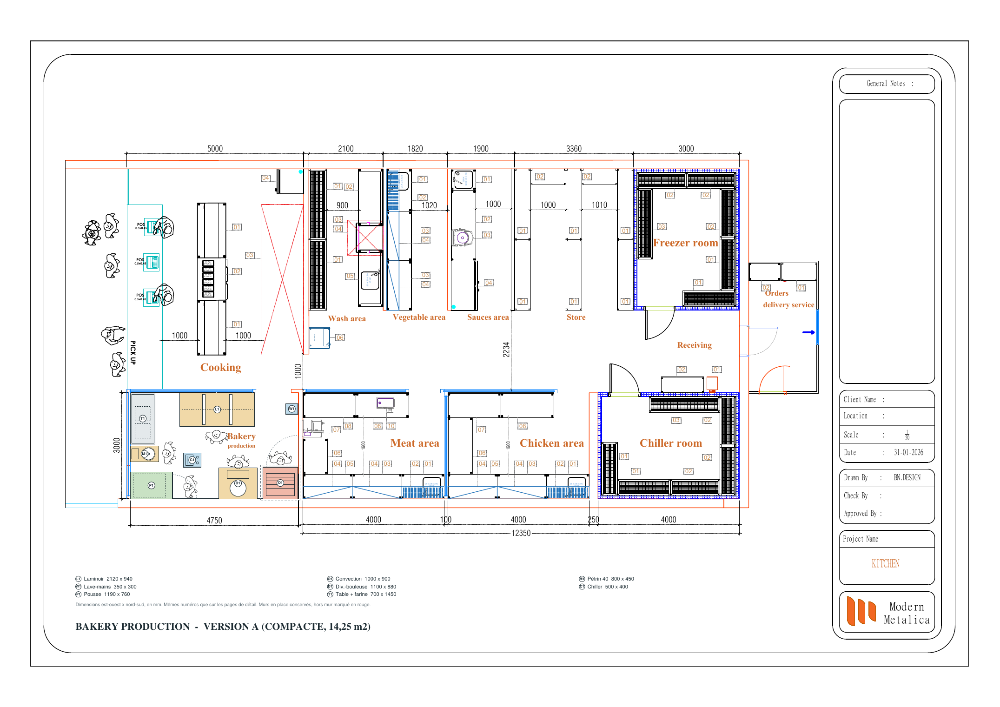
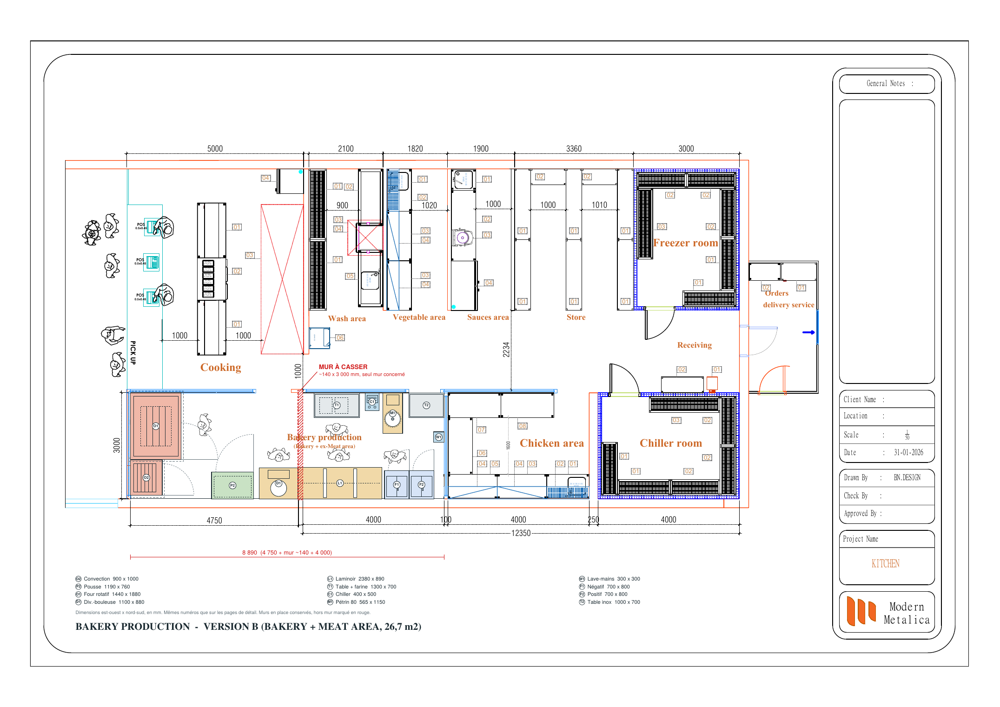
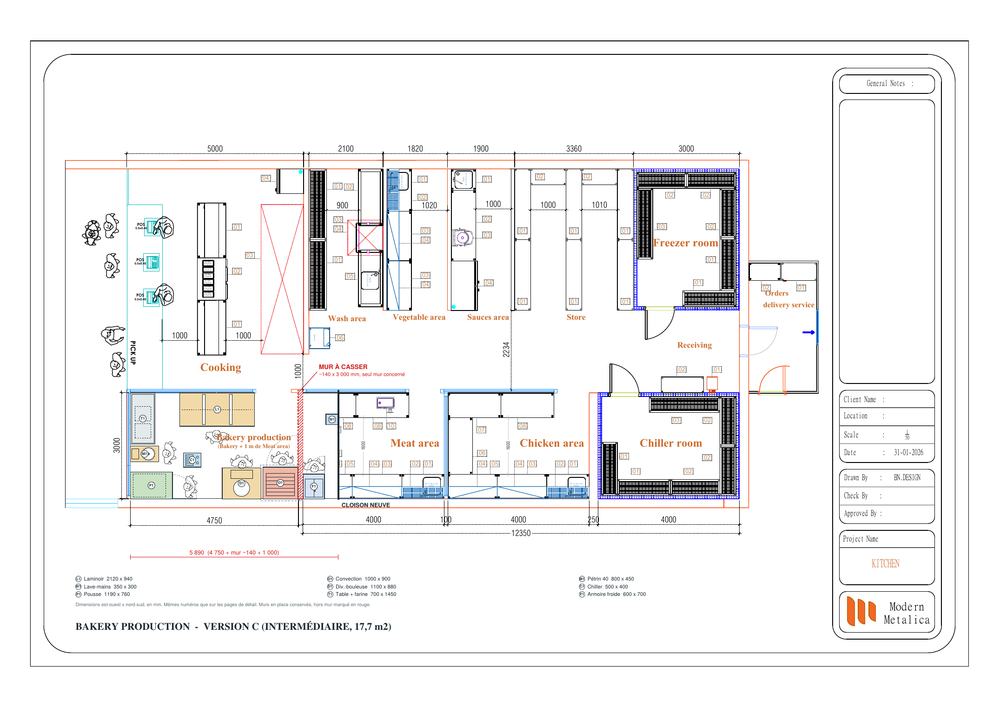
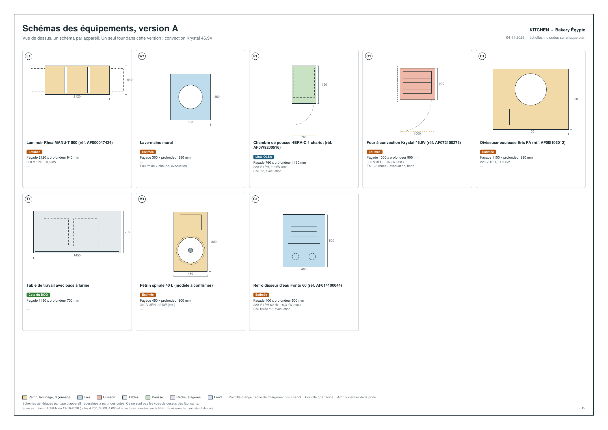
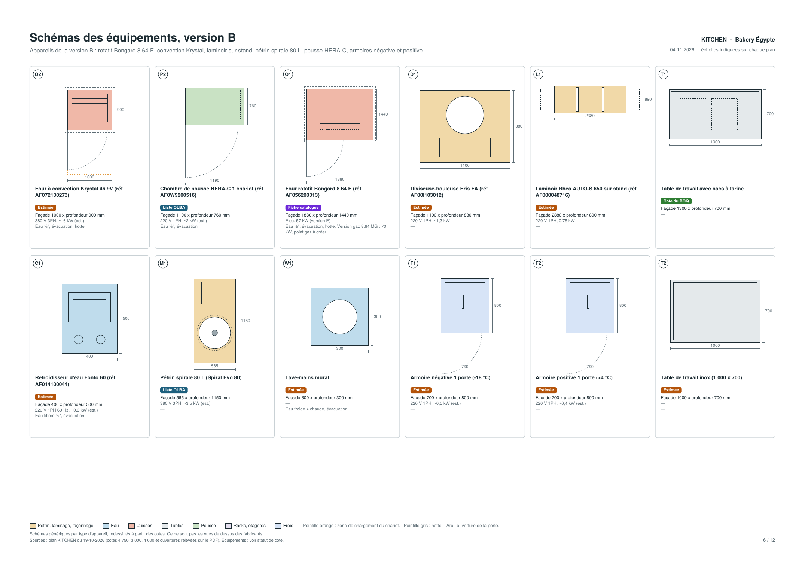
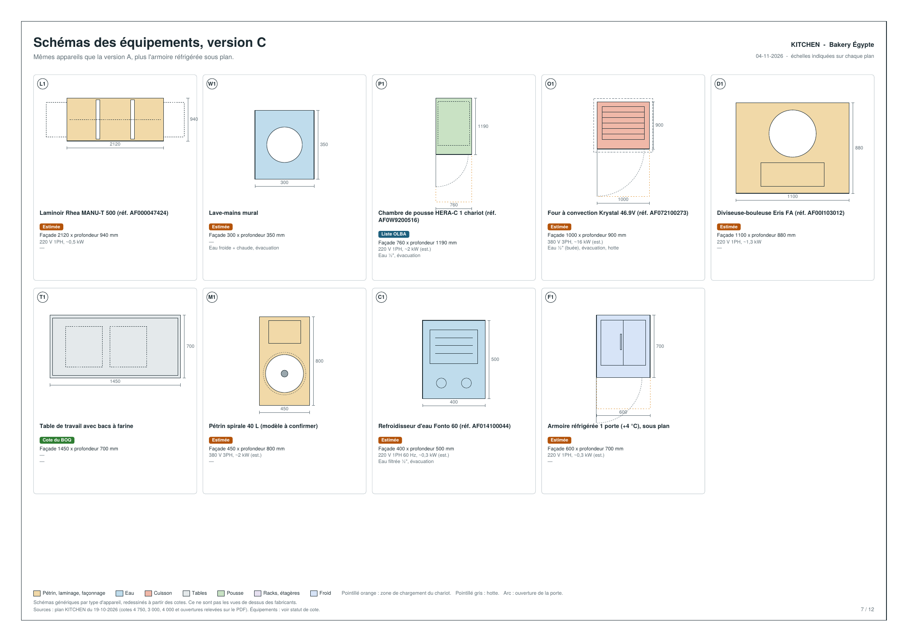
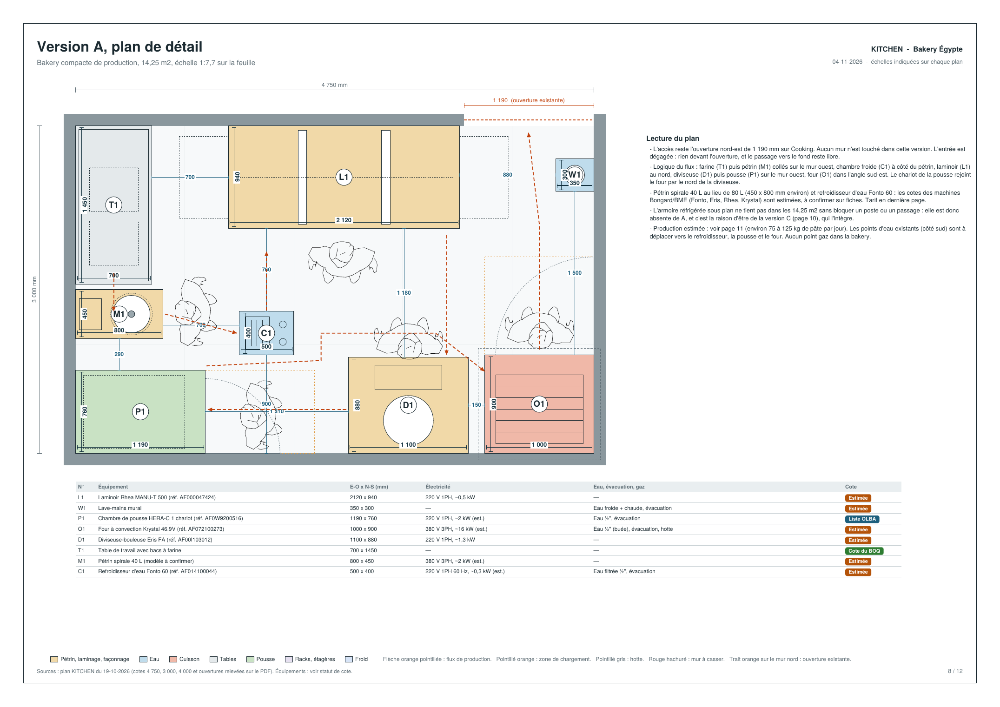
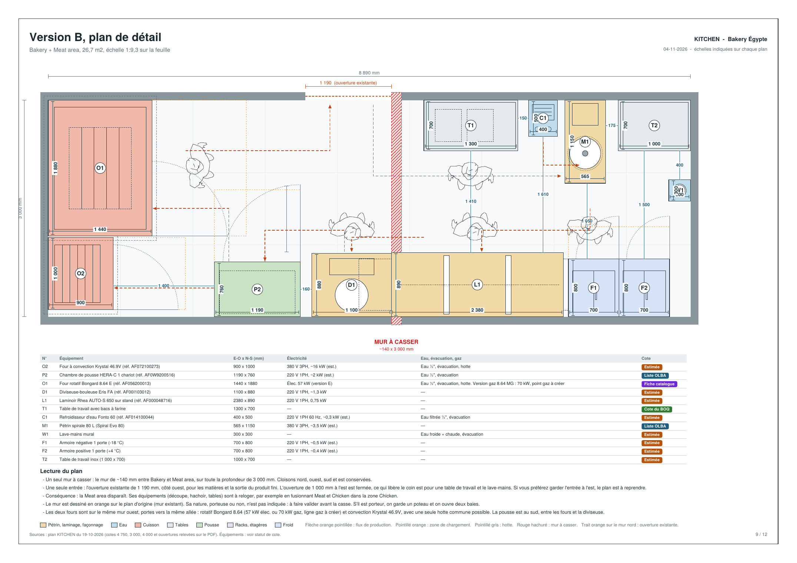
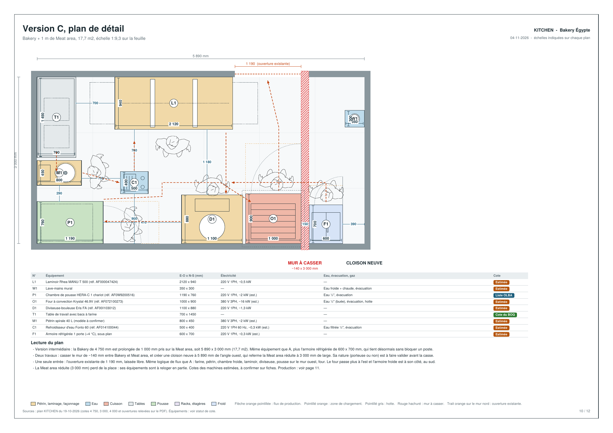
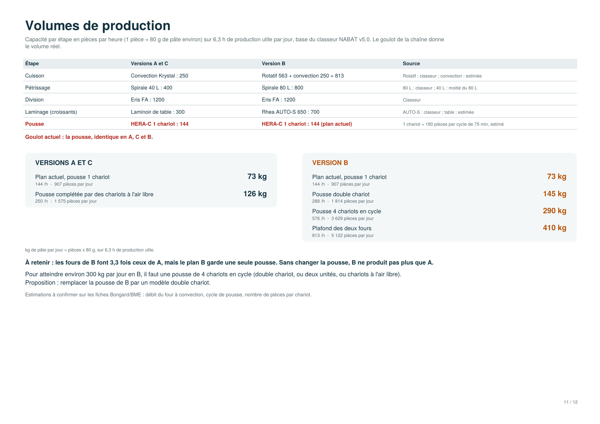
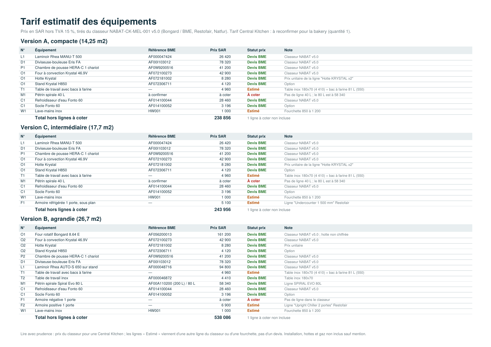